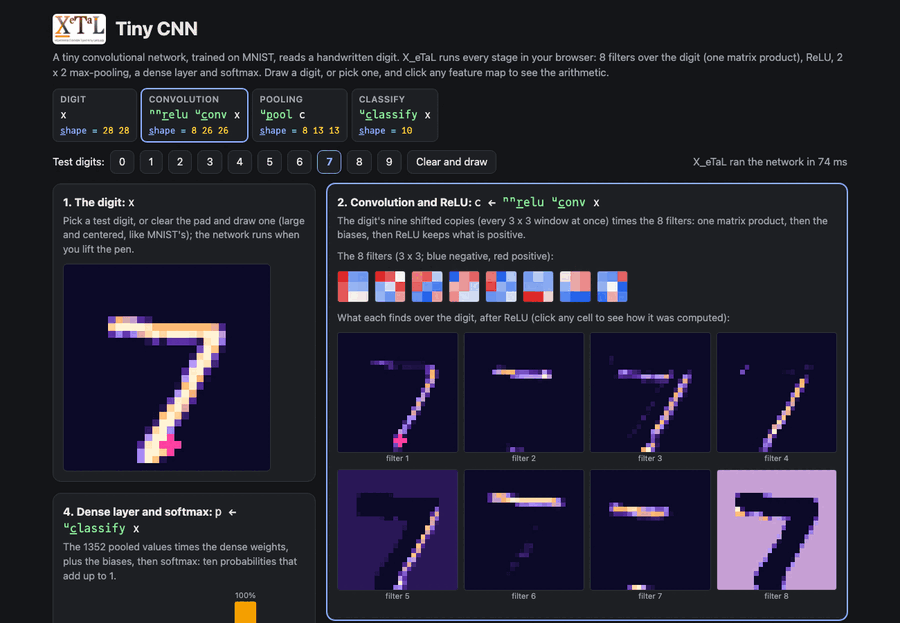
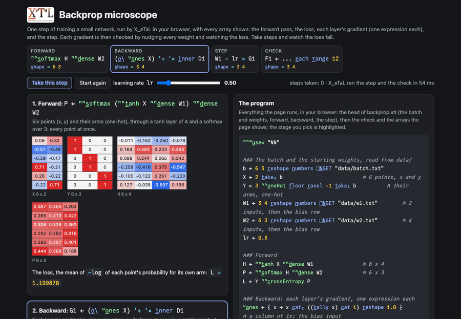
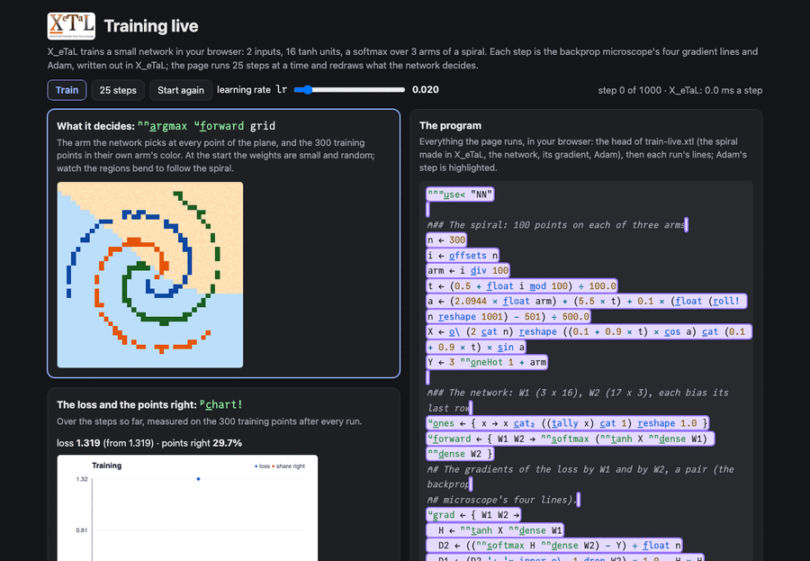
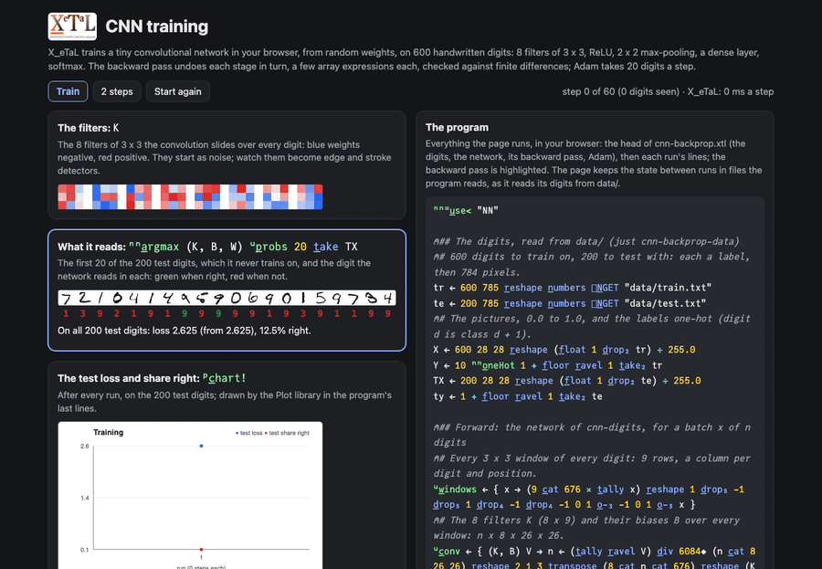
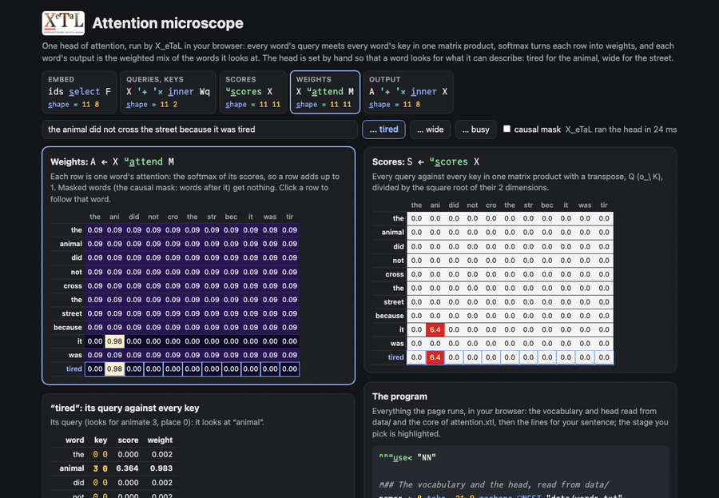
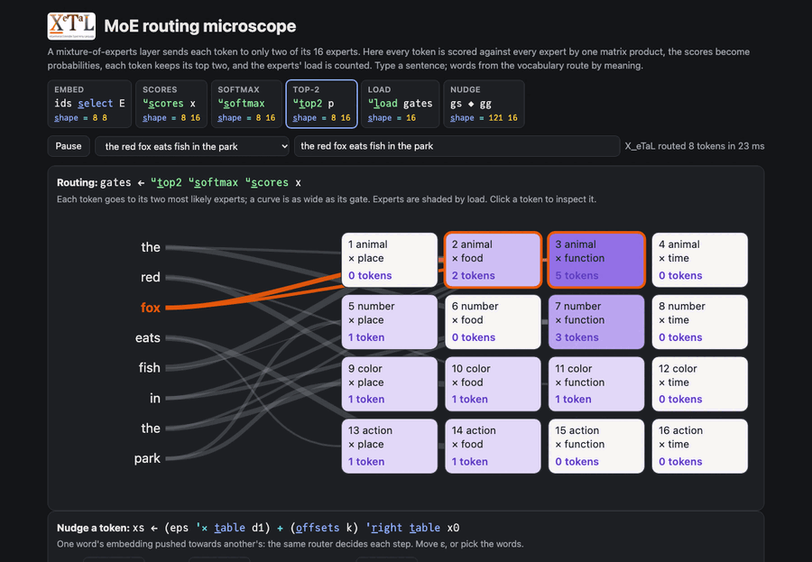
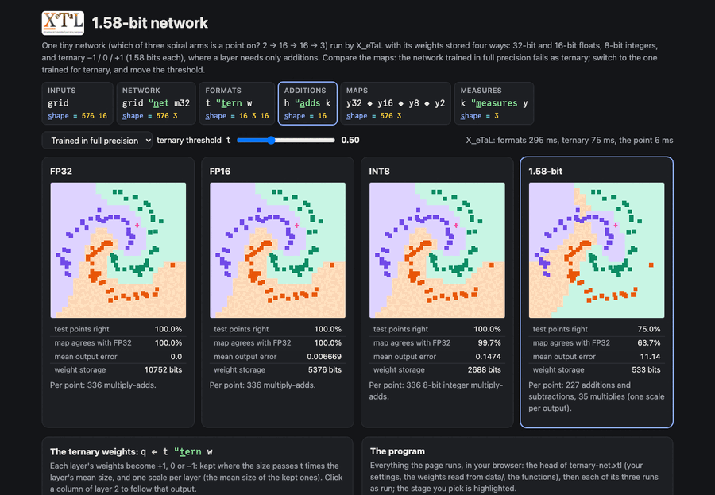
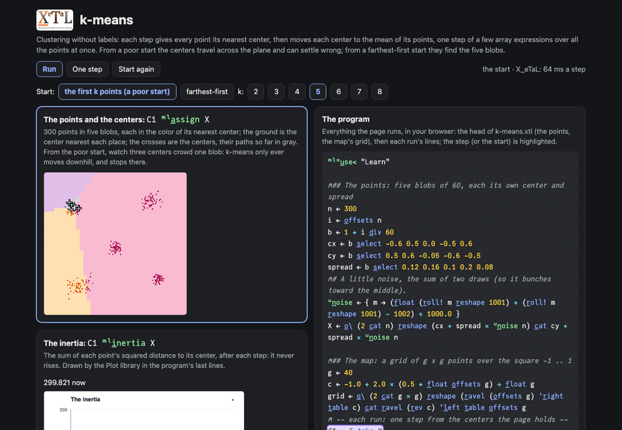
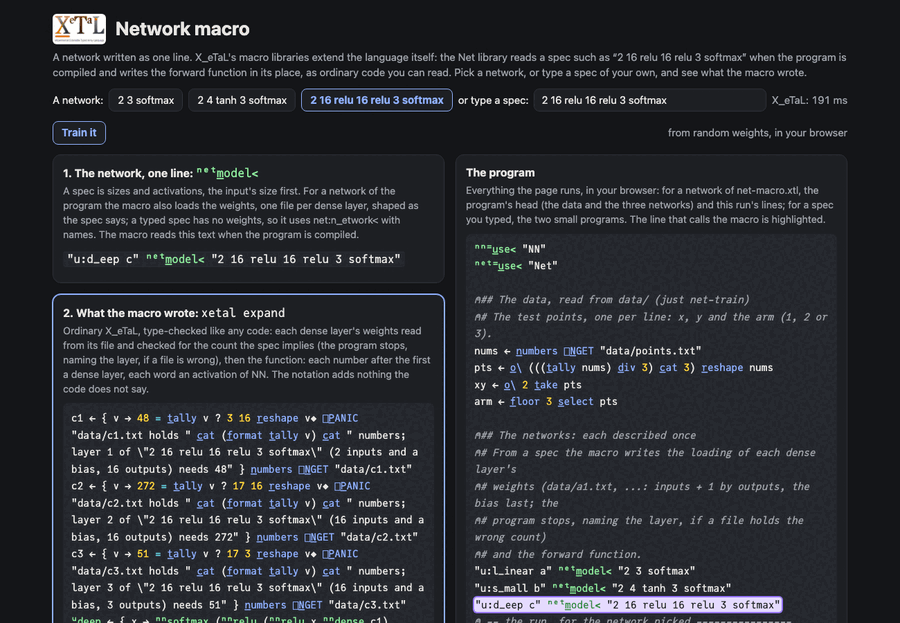

Live
Tiny CNN
A tiny convolutional network trained on MNIST reads a handwritten digit: convolution as the picture's nine shifted copies times eight filters, ReLU, 2 x 2 max-pooling by reshape, a dense layer and softmax, every stage an array program.
-1 0 1 o̲-₂ -1 0 1 o̲-₂ x
Every 3 x 3 window of the picture at once: the picture rotated by all nine offsets, then one matrix product with all eight filters, where other code needs four nested loops.
windows by rotationinner productreshape for poolingsoftmax

Live
Backprop microscope
One step of training a small network, every array shown: the forward pass, the loss, each layer's gradient as one expression, the step. Each of the 27 gradients is checked by nudging its weight and watching the loss. Take steps and watch the loss fall.
G1 ← (o̲\ ᵘo̲nes X) '+ '× i̲nner D1
A layer's gradient is its input transposed times what comes back from the layer above: one matrix product, for every weight and every example at once, where other code loops over each weight's contribution.
backpropagationmatrix product with a transposefinite differencesgradient descent

Live
Training live
X_eTaL trains a small network in your browser: 300 points of a three-arm spiral made in X_eTaL, the backprop microscope's gradient, Adam written out, 25 steps a frame. Watch the decision regions bend to follow the spiral and the loss fall.
s ← 25 'ᵘa̲dam p̲ower s
Training is a function iterated: one Adam step maps the state (the weights and two running averages) to the next, and p_ower repeats it, with no loop written; every step updates all 99 weights at once.
trainingAdamp_ower for iterationbackpropagation

Live
CNN training
X_eTaL trains a tiny convolutional network in your browser, from random weights, on 600 handwritten digits: the backward pass through softmax, the dense layer, max-pooling, ReLU and the convolution, checked against finite differences; Adam, 20 digits a step. Watch the filters form and the test digits come to be read right, from 12% to about 90% in 40 steps.
GK ← DM '+ '× i̲nner o̲\ V
The filters' gradient over a whole batch is one matrix product: what came back to every position of every map, times the transposed 3 x 3 windows of every digit, the same windows the convolution used going forward.
trainingbackpropagationconvolutionmax-poolingtuples

Live
Attention microscope
One head of attention as array algebra: every query against every key in one matrix product with a transpose, softmax by row, the output as a weighted mix. The head is set by hand so a word looks for what it can describe: tired finds the animal, wide the street. A causal mask; click a word to see its query against every key.
ᵘs̲cores ← { X → ((X '+ '× i̲nner Wq) '+ '× i̲nner o̲\ X '+ '× i̲nner Wk) ÷ 2.0 ^ 0.5 }
Every word's query against every word's key is one matrix product with a transpose; softmax by row and the weighted mix follow, with no loop over words.
matrix producttransposesoftmax by rowmasks

Live
MoE routing microscope
A mixture-of-experts router: a sentence's tokens scored against 16 experts by one matrix product, softmax, top-2 by masks, gates and the experts' load; words route by meaning. Nudge a token towards another word and watch the experts switch abruptly where two scores tie.
gates ← ᵘt̲op2 ᵘs̲oftmax ᵘs̲cores x
Every token against every expert is one matrix product, softmax works on every row at once, and top-2 is two masks over the whole score matrix: no sort per token.
inner productsoftmax by rowtop-k by masksreduceouter product for a path and a plane of inputs

Live
1.58-bit network
One tiny classifier run with its weights stored four ways (FP32, FP16, INT8, ternary -1/0/+1) and compared: maps, accuracy, error, storage, operations. A ternary layer is additions and subtractions only; ternary works when the network was trained for it.
(f̲loat x > s) − f̲loat x < n̲eg s
Quantizing a whole layer to -1, 0 and +1 is one comparison over the weight array, not a loop over weights; a ternary layer then needs only additions and subtractions.
inner productquantization as array expressionsreduce over two axesmasks

Live
k-means
Clustering without labels, step by step: 300 points in five blobs, every point given its nearest center, each center moved to the mean of its points. From a poor start three centers crowd one blob and k-means settles there; from a farthest-first start they find all five. Change k and the start.
(((o̲\ O) '+ '× i̲nner X) + C × f̲loat n = 0.0) ÷ 1.0 m̲ax n
A whole step's new centers at once: O is each point's nearest center as one-hot rows, so O's columns times the points sum each cluster's points; divided by each cluster's count, a center with no points kept where it was.
k-meansone-hot as a matrixp_owerthe Learn library

Live
Network macro
A network written as one line: a macro library reads a spec such as "2 16 relu 16 relu 3 softmax" when the program is compiled and writes the forward function in its place, as ordinary code you can read. Three networks on one task, a spiral: a line, a small network, a deep one. Type a spec of your own and see what the macro writes, or refuses; then train it in your browser from random weights, by the training step the macro writes from the same spec.
"u:d_eep c" ⁿᵉᵗm̲odel< "2 16 relu 16 relu 3 softmax"
The line is a macro call: before the program is compiled it becomes the loading of three weight files, shaped and checked as the spec says, and the forward function written out, three matrix products and their activations, type-checked like any code. The spec is the one place the network is described.
macro libraries (.xtlm)xetal expandmatrix productsoftmax by rowbackpropagationp_ower